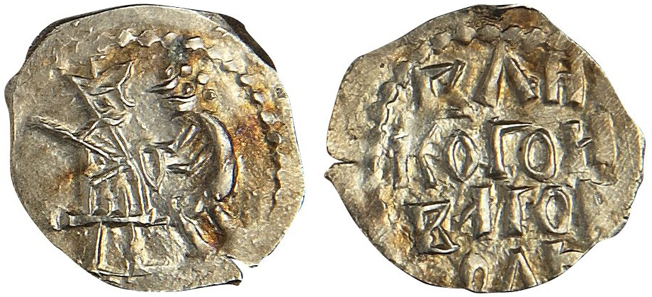

Новгород и Венеция
(об изображении на Новгородских монетах) [*]
С 1420 г., когда в Новгороде началась чеканка собственных серебряных монет, и вплоть до конца новгородской независимости тип новгородских денег («новгородок») оставался неизменным. На одной стороне они содержали надпись ВЕЛИКОГО НОВАГОРОДА, а на другой изображение двух фигур: левая, снабженная атрибутами власти или достоинства, стоит или сидит на престоле: правая, лишенная каких-либо атрибутов и даже
Наиболее основательная публикация таких монет была предпринята в 1884 г. знаменитым нумизматом графом И. И. Толстым, который оба преимущественных изображения (миндалевидную фигуру и ряд точек) положил в одну из основ классификации более чем изобильного материала [1]. Следует особо отметить неизменность такого типа новгородских денег. Тогда как монетный чекан любого другого русского центра XV в. демонстрирует бесконечное разнообразие сюжетов, стабильность описанной композиции новгородских монетах позволяет догадываться о ее символическом характере, превращая ее в некую эмблему Новгорода заключительной эпохи его государственной самостоятельности.

Деньга Великого Новгорода
Литература, посвященная попыткам истолкования изображения на новгородских монетах, обширна и разноречива. Несомненным для всех исследователей являлось только неравенство участников композиции, подчеркнутое коленопреклонением правой фигуры, о которой принято писать, что она «стоит в просительной позе». Она к тому же простирает руки к левой фигуре, снабженной инсигниями власти. Подробный разбор исследовательских мнений толкователей монетной композиции был предпринят А. В. Арциховским, опубликовавшим в 1948 г. статью «Изображение на новгородских монетах» [2].
- Такого сближения явно недостаточно для заимствования символов и эмблем.
- Существует однако более важная основа близости — политическая.
- Известно, что демократическая государственность обретает сходные формы вне зависимости от местонахождения государства.
- Но здесь очень важны хронологические совпадения.
Главное внимание, естественно, всегда привлекала левая фигура. Ее атрибуты (трон, корона), разумеется, более красноречивы, чем обнаженная правая фигура. Не останавливаясь на ранних (до появления капитального труда И. И. Толстого) случайных толкованиях, отмечу сразу версию этого выдающегося исследователя, который был убежден, что на новгородских монетах «было вычеканено изображение московского великого князя со стоящим перед ним в просительной позе человеком. Человек этот неизменно представлен без всяких признаков одежды, очевидно голым; это сделано, без сомнения, с умыслом — чтобы указать на несравненно низшее положение этого лица по отношению к другому; на некоторых штемпелях голый проситель держит какой-то предмет в руках <…>, на других он протягивает руки по направлению к великому князю снизу вверх — жест, означающий, по-видимому, просьбу. В этом изображении бросается в глаза его аллегоричность, так как без натяжки можно предположить, что нагой фигурой олицетворяется сам вольный Новгород с волостью, признающий свою зависимость от великого князя» [3]. Предмет, помещенный между фигурами, И. И. Толстой трактовал как некий «дар» великому князю.
- Такого сближения явно недостаточно для заимствования символов и эмблем.
- Существует однако более важная основа близости — политическая.
- Известно, что демократическая государственность обретает сходные формы вне зависимости от местонахождения государства.
- Но здесь очень важны хронологические совпадения.
Литература
[*] Восточная Европа в Средневековье: к 80-летию В. В. Седова / Ин-т археологии. М.: Наука, 2004.
[1] Толстой И. И. Русская допетровская нумизматика. Вып.1: Монеты Великого Новгорода.
[2] Арциховский А.В. Изображение на новгородских монетах.
[3] Толстой И.И. Указ.соч. С.20-21.
[4] Петров П. Деньги Великого Новгорода // ЖМНП. 1885. С. 232-238. Эта рецензия, к сожалению, оказалась вне внимания А.В. Арциховского в его ценном обзоре.
[5] Чудовский Д.Н. «Новгородки». Критический разбор первых двух выпусков Русской допетровской нумизматики гр. Ив. Ив. Толстого. Киев, 1887. С. 45.
[6] Там же. С. 52.
[7] Гусев П.Л. Символы власти в Великом Новгороде. 1. Святая София// Вестник археологии и истории. СПб., 1911. С. 105-113.
[8] Арциховский А.В. Указ. соч. М. 101-102.
[9] Там же. С. 106.
[10] Там же.
[11] Срезневский И.И. Словарь древнерусского языка. М., 1989. Т.2. Ч.2. Стб. 1340.
[12] Янин В.Л. Новгородские посадники. М., 1962.
[13] Брагина Л.М., Карпов С.П. Италия в XIII—XV вв.// История средних веков. М., 1997. Т. 2. С. 438.
[14] Рындина А.В. Итальянская камея XIII в. с изображением Богоматери Одигитрии из Новгорода // Советская археология. 1968. №4. С. 209-216.
[15] Щапова Ю.Л. Новый взгляд на две новгородские находки (Венецианское стекло в Новгороде) // История и культура древнерусского города. М., 1989. С. 82-88.
Янин В.Л. Денежно-весовые системы домонгольской Руси и очерки истории денежной системы средневекового Новгорода. С. 288-296.